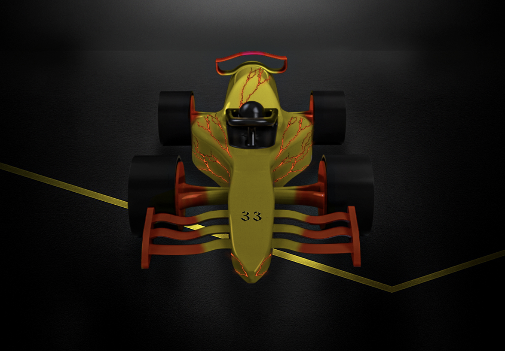

F1 in Schools - Mini Formula 1 Car
Design and manufacture of a CO2-powered mini F1 car for a 20 m sprint, under strict 2024 regulations.
Project Context and Objective
This project is part of the international F1 in Schools challenge. The goal is to engineer a mini Formula 1 car propelled by an 8 g CO2 cartridge, machined from an approved F1 Model Block, and optimized to run a straight 20 m track as fast as possible while meeting the 2024 technical rules (T1 to T10).
Engineering focus: strict compliance, aerodynamic performance, rolling stability, CNC manufacturability, and professional deliverables.
// TOOLS AND METHODS
Fusion 360 (CAD/CAM)
Star-CCM+ (CFD)
3D Printing
CNC Machining
Dimensional Control
Case Study PDF
Portfolio Pages
Auto-advances every 5 seconds. Use arrows to go back.
01 / 07
Deliverables
- -Complete CAD model (Fusion 360, STEP export)
- -2D technical drawings with dimensions and tolerances
- -Realistic 3D renders for communication
- -CFD simulations with pressure, velocity, and friction maps
- -3D printed prototype for fit and assembly validation
- -CAM programming and CNC machining simulation
- -Dimensional inspection (CAD vs prototype and machining)
- -Final report and compliance documentation
Workflow and Compliance Strategy
- -Iterative loop between CAD, CFD, prototyping, and CAM
- -Early identification of blocking rules and safety items
- -Required features: single-block body, tether guides, CO2 chamber, wheel visibility
- -Conservative geometry to avoid limit violations
- -Design for CNC access and clean assembly
CAD and Design Iterations
- -Restarted the model from scratch to avoid legacy errors
- -Structured sub-assemblies for fast iterations
- -3 to 4 versions refined for compliance and machinability
- -Halo and helmet kept as standard supplied parts
CFD Analysis and Findings
- -Half-geometry simulation to reduce compute time
- -Airflow set at 50 m/s for comparative diagnostics
- -Removed side skirt and tuned wing transitions
- -Late issue: front wing rod disrupted the inlet flow
Prototyping and Validation
- -3D printed prototype to validate geometry and assembly
- -Light filament and vertical orientation for quality
- -Weak front axle zone detected and reinforced in CAD
CAM and CNC Machining
- -Two-step toolpath: roughing then ball-end finishing
- -Custom fixture inserted in the central hole for rotation
- -Incident: origin not reset, causing angular offset
- -Machining ongoing at the time of the report
Test Day
Track test highlight video.